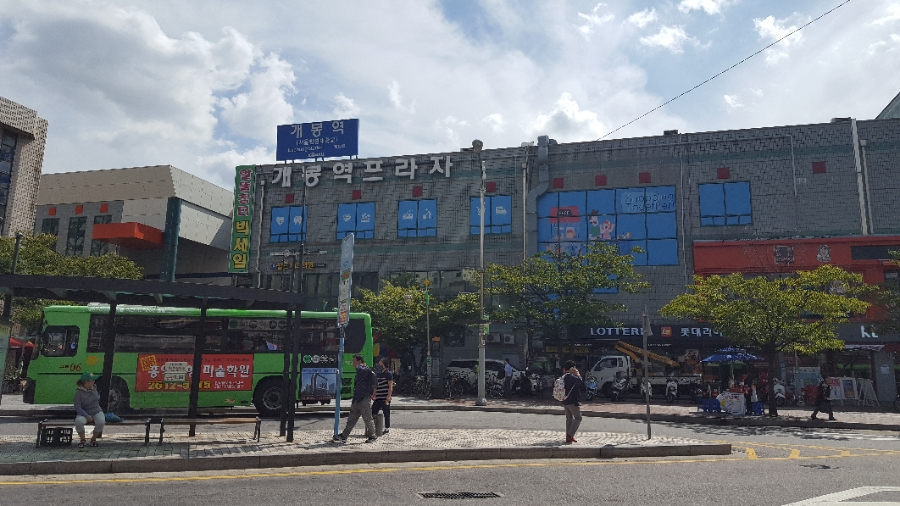

개봉동은 서울특별시 구로구에 있는 동으로 우리의 추억이 깃든 동네이다.
면적 2.93㎢, 인구 9만 6797명(2008)이다. 서울특별시 구로구에 속한 동이다. 서쪽은 양천구 신정동과 인접하고, 남쪽은 오류동에 접하며, 동쪽은 개봉천을 사이로 경기도 광명시 철산동과 이웃하고, 북쪽은 고척동과 마주한다. 동 이름은 경인선과 남부순환도로가 교차하는 남쪽에 있는 개웅산의 '개' 자와 양천구 신정동과 경계를 이루는 매봉산의 '봉' 자를 합하여 만들어졌다.
조선시대에는 부평도호부 갈탄(葛灘)이었다. 1914년 경기도 부평군 계남면 개봉리로 되었다가 1941년 부천군 소사읍 개봉리로 바뀌었다. 1963년 서울특별시 영등포구에 편입되면서 개봉동으로 되었고, 1980년 구로구 신설로 이에 속하게 되었다. 법정동인 이 동은 행정동인 개봉본동과 개봉1~3동으로 이루어져 있다.
잣절인 백사리(柏寺里)는 잣나무가 많았고, 절이 있었다고 하여 붙여진 이름인데, 오류초등학교 뒷산 너머 남부순환도로변에 있다. 이 마을은 광산(光山) 김씨(金氏) 집성촌이었으며, 뒷산에는 약수터와 배드민턴장 등 체육시설이 있어 주민들이 휴식처로 이용한다. 가린열(갈탄:葛灘)은 고척동과 경계가 되는 동의 중앙에 있는 곳으로, 갈대가 많고 여울이 많은 곳이라 하여 가린여울 또는 가린열로 불리게 되었다. 그후 칡과 같이 여러 갈래의 개천이 합쳐져 여울이 많다 하여 갈탄이라 불리게 되었다.
경인로 덕산병원 부근을 옛날에는 덕고개라 하였다. 경인로 확장과 남부순환도로 개설로 인하여 이 두 도로가 교차하는 오류인터체인지로 변하였다. 옛날에는 개봉·고척 지역에서 오류동과 인천으로 가는 유일한 고개였으며 대보름에는 이곳에서 불놀이를 하였다. 고개 부근 마을을 덕고개마을이라 하였다. 동의 동서로 경인로와 남부순환도로가 지나고, 남북으로 개봉로가 관통하고 있어 교통의 요지이며, 안양천 서쪽의 구로구 중에서 가장 번화한 지역으로 일찍부터 도시화가 진행되었다. 학산(鶴山) 아래에는 하나님의 교회 신학대학교가 있고, 개봉1동에는 장애인 복지시설인 에덴하우스가 있다.